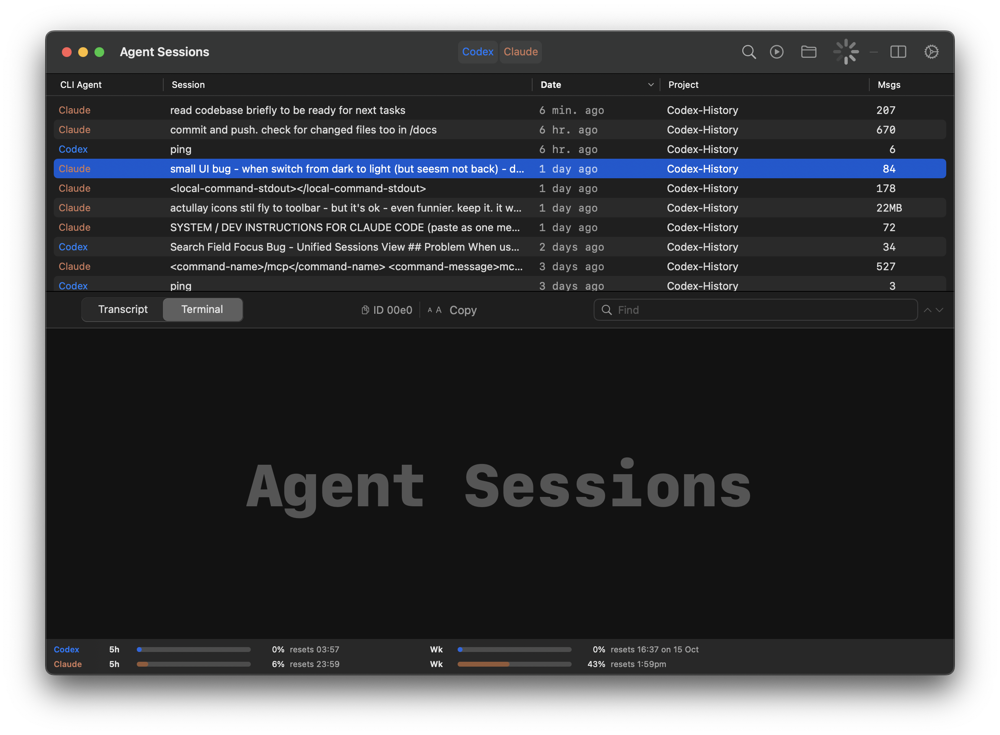
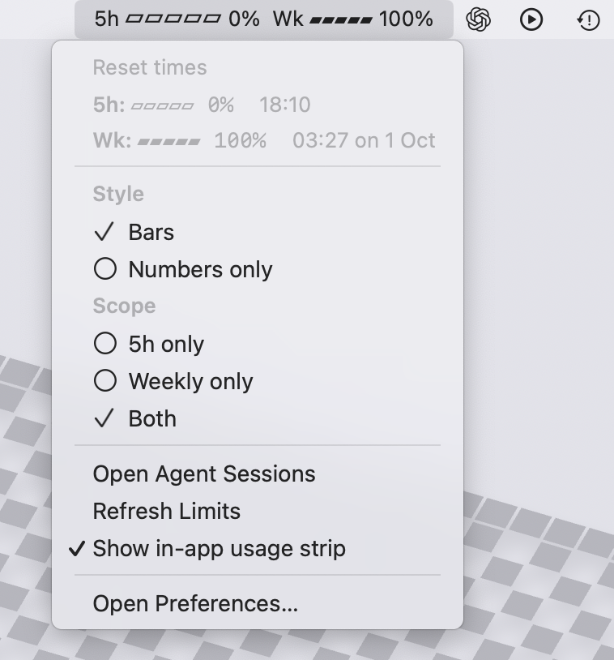
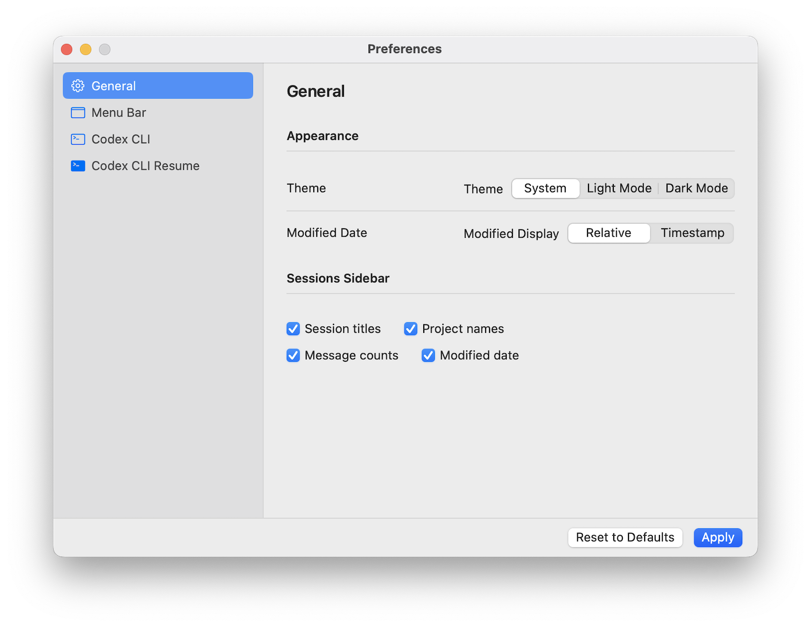

Stop grepping through JSONL files. Agent Sessions gives you instant search, one-click session resumption, and real-time usage tracking for Codex CLI. Local-first, private, and designed with developers in mind.
Download for macOS View on GitHubbrew tap jazzyalex/agent-sessions
brew install --cask agent-sessionsOne-click launch of saved sessions in Terminal with automatic working directory resolution. Works with Homebrew or npm installs; no PATH configuration needed.
Menu bar widget shows your 5-hour and weekly rate limits with color-coded thresholds. Know when limits reset before you hit them.
Full-text search across all sessions with repo and path operators. Find conversations in seconds vs. grepping through JSONL files manually.
Automatic repository detection with branch tracking. Filter sessions by project with one click.
All processing happens on your Mac. Reads ~/.codex/sessions locally. No cloud uploads or telemetry.
Session browser with grouped timeline and full-text search
Transcript view with timestamps and role-based styling
Menu bar usage tracking with 5-hour and weekly percentages
Preferences: Codex CLI configuration and usage display options